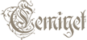

Welcome to  Docs
Status: Working on front-end.
Vision Statement
For readers of all kind who want to track their readings, socialize with people that has similar tastes and maybe keep in touch with authors and/or publishers.
Cemiyet is a personal tracking and networking application that allow it's users (readers, authors and publishers) to track their readings and socialize with others around them.
Unlike similar applications Cemiyet focuses on local groups and reinterprets socializing with that groups in mind.
Glossary
| Symbol | Meaning |
|---|---|
| ❓ | it's not accepted yet |
| 💶 | potential income model |
| 🆘 | help needed |